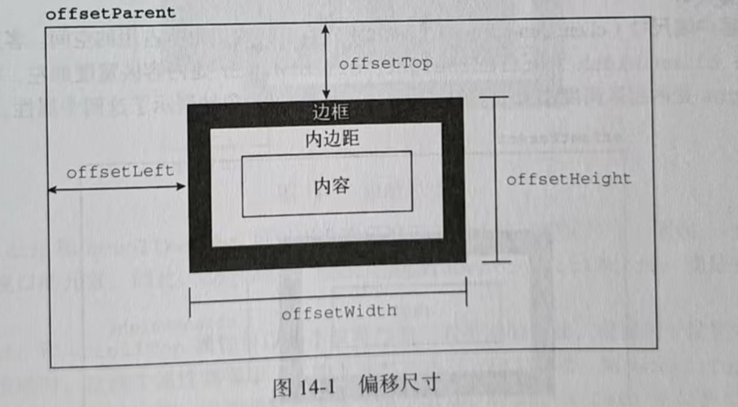

第一组属性涉及 偏移尺寸(offset dimensions) ，包含元素在屏幕上占用的所有视觉空间。元素在页面上的视觉空间由其高度和宽度绝定 , 包括所有内边距、滚动条和边框(但不包含外边距)。以下4属性用于取得元素的偏移尺寸。
其中,offsetLeft 和offsetTop 是相对于包含元素的,包含元素保存在offsetparent 属性中offsetParent 不一定是parentNode。比如， <td>元素的offsetParent是作为其祖先的 <table>元素, 因为 ≪table>是节点层级中第一个提供尺寸的元素 。
要确定一个元素在页面中的偏移量，可以把它的offsetLeft 和offsetTop属性分别与offsetparent的相同属性相加，一直加到根元素。下面是一个例子:
let son = document.getElementById('son')
function getElementLeft(element) {
let actualLeft = element.offsetLeft
let current = element.offsetParent
while (current !== null) {
actualLeft += current.offsetLeft
current = current.offsetParent
}
return actualLeft
}
function getElementTop(element) {
let actualTop = element.offsetTop
let current = element.offsetParent
while (current !== null) {
actualTop += current.offsetTop
current = current.offsetParent
}
return actualTop
}
console.log(getElementLeft(son), getElementTop(son)) // 8 1138
核心就是用while循环不断获得父定位元素的offsetTop 和 offsetLeft , 然后加在一起就可以算出来了
这两个函数使用offsetparent在DOM树中逐级上溯，将每一级的偏移属性相加，最终得到元素的实际偏移量。对于使用CSS布局的简单页面，这两个函数是很精确的。而对于使用表格和内嵌窗格的页面布局，它们返回的值会因浏览器不同而有所差异，因为浏览器实现这些元素的方式不同。一般来说, 包含在<div>元素中所有元素都以<body>为其 offsetParent，因此 getElementleft() 和 getElementTop()返回的值与offsetLeft 和offsetTop 返回的值相同。
注意所有这些偏移尺寸属性都是只读的，每次访问都会重新计算。因此，应该尽量减少对它们的查询次数。比如把查询的值保存在局部变量中，就可以避免影响性能。